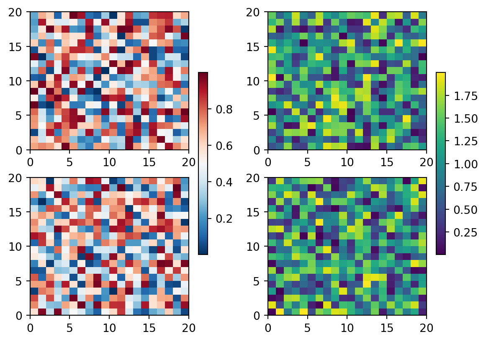

import matplotlib.pyplot as plt
import numpy as np
# Fixing random state for reproducibility
np.random.seed(19680801)
fig, axs = plt.subplots(2, 2)
cmaps = ['RdBu_r', 'viridis']
for col in range(2):
for row in range(2):
ax = axs[row, col]
pcm = ax.pcolormesh(np.random.random((20, 20)) * (col + 1),
cmap=cmaps[col])
fig.colorbar(pcm, ax=axs[:, col], shrink=0.6)
plt.show()